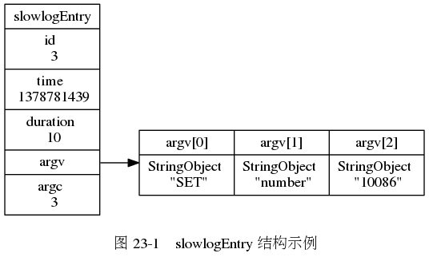

slowlogEntry 结构。
slowlogEntry

服务器状态的 slowlog 属性。
slowlog
第 22 章： 二进制位数组
第 24 章： 监视器
Enter search terms or a module, class or function name.
![digraph {
label = "\n 图 23-2 redisServer 结构示例";
rankdir = LR;
node [shape = record];
redisServer [label = " redisServer | ... | slowlog_entry_id \n 6 | <slowlog> slowlog | slowlog_log_slower_than \n 0 | slowlog_max_len \n 5 | ... "];
slowlogEntry_5 [label = " slowlogEntry | id \n 5 | time \n 1378781521 | duration \n 61 | <argv> argv | argc \n 2 "];
slowlogEntry_1 [label = " slowlogEntry | id \n 1 | time \n 1378781425 | duration \n 11 | <argv> argv | argc \n 4 "];
more [label = "...", shape = plaintext]
redisServer:slowlog -> slowlogEntry_5 -> more -> slowlogEntry_1;
}](_images/graphviz-2634cbda11c253dc440086b228cff1c0fbe8efb3.png)